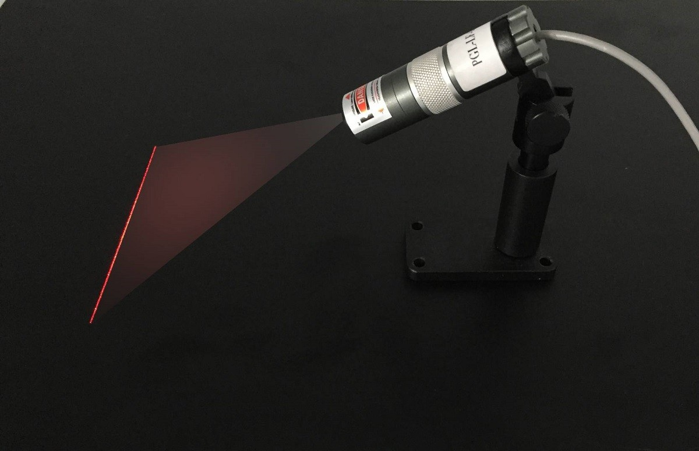
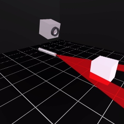
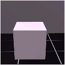
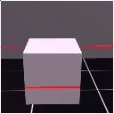
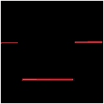
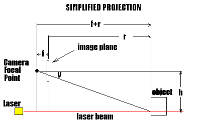
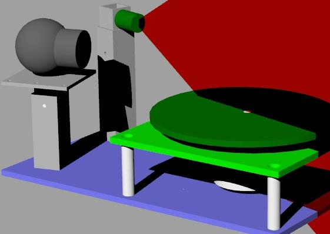
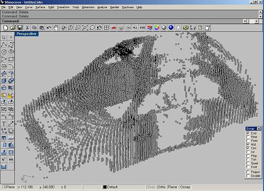

This issue is all about finding the distance from one point to another. Several methods are discussed:
As an intermediary measure to using full stereometric vision, I have been experimenting with structured-light vision. Structured light vision techniques greatly simplify the process of triangulating the position of a point in space.

Using structured light techniques, one can do real time navigation without lots of horsepower. This is because one is able to project a beam with known coordinates. This provides information about at least one aspect of the geometry in front of the camera, so the triangulation equations are much easier and less computationally expensive. These are commonly called "Laser Line Modules."
Structured light techniques are far superior to sonar for range and shape measurements in quality and potentially cheaper. They are able to map out the region in front of the camera quickly and accurately. The angular resolution of structured light systems is quite good. Structured light techniques appear far superior to Sonar / Ping sensors. A simple structured light system might be cheaper if one considers using a webcam or cell phone.
The basic idea with structured light vision is to project a light beam of known geometry onto a scene and then use a video camera to observe how it is distorted by objects. Using simple geometric formulas, one can reconstruct the shape of those objects. There are several optical attachments to laser diodes which produce wide planes of laser light without any moving parts. Additionally, one does not have to use a visible laser to perform the scan. Most CCD cameras will detect infrared laser beams quite well (some cameras are more sensitive to infrared light).

Here we see a self-scanning laser diode projecting a beam onto the region in front of it; above is the camera.
The basic idea is probably best shown by these pictures from the cached version of the original Actlite site:
 |
- |  |
= |  |
The first image is what the camera sees with the laser off. The second image is what the camera sees with the laser on. The third image is the mathematical difference of the two. By subtracting the first two images, only the difference between them is left: the laser projection. Finally, one may want to filter the difference image so that the scanned beam appears no thicker than one pixel. This will aid in map building.
At this point, the position of the laser line is used to calculate the depth of the object. This can be as basic as simply starting from the bottom of the image and iterating upwards through pixels in each column until we see a red pixel; the count is proportional to the distance. With some calibration, we can set a cutoff for how close is "too close" and we have a trigger for an alarm or wheel turning on our robot.

Now that we have a bitmap image of the laser scan on the objects (and knowing the geometry of the scanner and laser), we can reconstruct the geometry of the scene:
Using similar triangles, we see that: (y / f) = h / (r + f)
Solving for r, we get: r = (f * h / y) - f
Since we know f and h, we can determine the range, r, as a function of y.
We now merely have to scan the difference bitmap and calculate the range of any pixels that result from the laser projection. Here is "pseudo code" for this process:
For y = 1 to Bitmap.YMax
For x = -Bitmap.XMax to Bitmap.XMax
If Bitmap.Pixel(x,y) != 0 then
ry = f*h/y - f
rx = x * (f+ry)/f
rz = -h
{ Now do something with the knowledge }
{ that a pixel maps to a particular position }
{ relative to the camera. Perhaps convert }
{ to absolute coordinates and build a map }
end if
next x
next y

I've had the joy of working on a really interesting project with a real 3D CAD expert. Mostly I helped with some math and spewed out ideas, but the simplicity and the results are astounding. The project is a laser 3D scanner built for much less than any commercial unit.
Get_Pictures Routine:
Laser True
Wait 0.3
ezVidCap1.SaveDIB ("c:\temp\laserOn.bmp")
Picture2.Picture = LoadPicture("c:\temp\laserOn.bmp")
Laser False
Wait 0.3
ezVidCap1.SaveDIB ("c:\temp\laserOff.bmp")
Picture1.Picture = LoadPicture("c:\temp\laserOff.bmp")
Step_Clock
TransformImage Routine: (Adapted from Rod Stephens' Visual Basic Graphics Programming)
For Y = 0 To Picture1.ScaleHeight - 1
For X = 0 To Picture1.ScaleWidth - 1
With pixels(X, Y)
.rgbRed = Abs(CInt(.rgbRed) - pixels2(X, Y).rgbRed)
.rgbGreen = Abs(CInt(.rgbGreen) - pixels2(X, Y).rgbGreen)
.rgbBlue = Abs(CInt(.rgbBlue) - pixels2(X, Y).rgbBlue)
If (.rgbRed > filter) And (.rgbGreen > filter) And (.rgbBlue > filter) Then
.rgbRed = 0: .rgbGreen = 0: .rgbBlue = 0
Else
.rgbRed = 255: .rgbGreen = 255: .rgbBlue = 255
End If
End With
Next X
Next Y

The result is a "point cloud" that describes your subject. Additional software can process these points into lines or faces to reduce complexity.